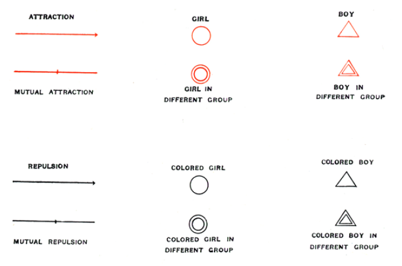
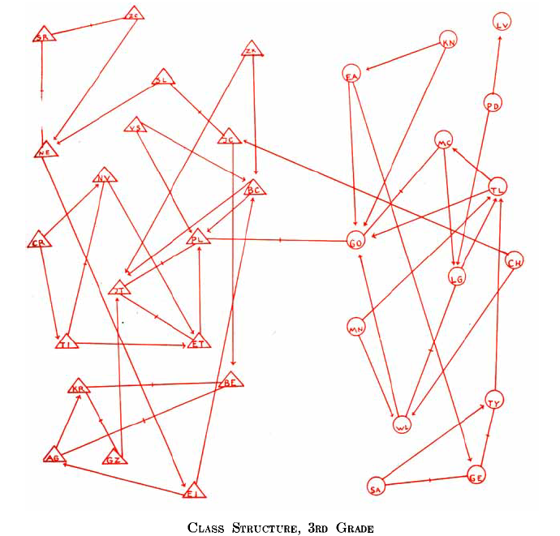
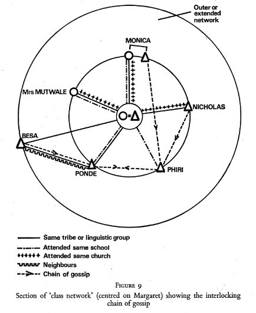
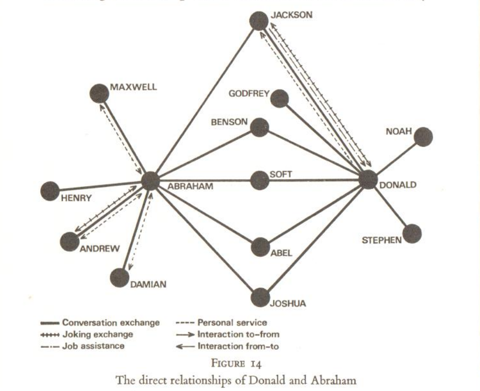
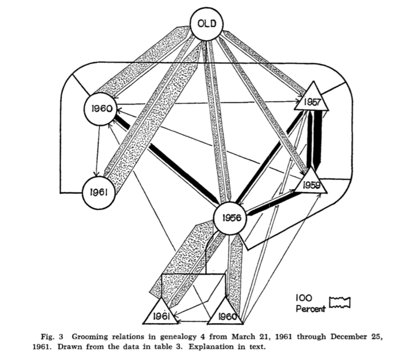

2 Histoires & disciplines
La lecture de ce chapitre n’a pas d’intérêt pratique immédiat et peut donc être considérée comme optionnelle. Elle peut cependant s’avérer utile si vous souhaitez franchir les limites méthodologiques de votre discipline à moindre coût. Ce chapitre est une esquisse et mériterait une approche historique plus rigoureuse.
Ce chapitre pourrait donner lieu à une jolie série d’ouvrages. L’objectif ici est plus modeste : il s’agit d’indiquer, pour une poignée de disciplines seulement (sociologie, géographie, écologie et physique), comment l’analyse de réseau s’est développée, quelles ont été les données utilisées ainsi que les principales questions de recherche. Les références bibliographiques, plus nombreuses que dans les autres chapitres, permettront aux personnes curieuses de creuser ces questions. La dernière section évoque les questions de traduction disciplinaire afin de vous permettre de naviguer plus facilement d’une discipline à l’autre.
2.1 Théorie des graphes et analyse de réseau
Dans tous les manuels d’analyse de réseau ou presque, vous trouverez la jolie histoire du mathématicien Euler qui, en 1736, se demande s’il est possible de se promener dans Kaliningrad (Königsberg à l’époque) en passant une fois et une seule sur chacun des ponts de la ville (la réponse est non). Euler ayant symbolisé les rives par des points et les ponts par des lignes pour résoudre son problème, il est souvent présenté comme l’inventeur de la théorie des graphes. La réalité est un petit peu plus compliquée et parler de théorie des graphes comme programme de recherche autonome avant 1930 1 voire 1950 2 est un anachronisme.
La théorie des graphes étudie des objets constitués d’un ensemble d’entités appelées sommets et d’un ensemble de liens entre ces entités. Il n’existe pas de notation standard mais l’une des plus courantes est \(G = \{V,E\}\) où \(G\) désigne le graphe, \(V\) l’ensemble de sommets (\(V\) comme vertex, pluriel vertices) et \(E\) l’ensemble des liens (\(E\) comme edges). L’ensemble de sommets est fini et non vide, l’ensemble de liens est fini et éventuellement vide 3. À la différence des approches disciplinaires évoquées par la suite, la notion d’attribut n’est pas pertinente et la représentation visuelle des relations n’est pas un enjeu.
Lorsqu’on étudie les premiers articles d’analyse de réseau et ce quelle que soit la discipline, on se rend vite compte que les emprunts à la théorie des graphes sont en fait réduits : le vocabulaire de base est généralement repris (graphe, liens, sommets) mais souvent adapté ou modifié, une poignée de mesures peuvent être recyclées si elles permettent de répondre à des questions de recherche et c’est en général à peu près tout 4. Ceci n’est d’ailleurs pas étonnant : là où la théorie des graphes cherche à produire des énoncés aussi généraux que possible, les approches en sciences sociales visent au contraire à étudier un ou plusieurs réseaux spécifiques liés à un aspect précis du monde social. Pour le formuler autrement, il n’est guère utile de parcourir des manuels de théorie des graphes pour pratiquer l’analyse de réseau. Dans certains cas, il n’existe d’ailleurs pas le moindre lien avec la théorie des graphes et c’est notamment le cas de la sociométrie apparue aux États-Unis dans les années 1930.
2.2 Quand Jennings et Moreno créent la sociométrie
L’ouvrage de Jacob Moreno, écrit avec l’aide d’Helen Jennings (cette dernière n’étant pas créditée), Who shall survive? paru en 1934 et disponible en ligne 5 est sans doute le premier ouvrage 6 proposant une démarche complète d’analyse de réseau, évoquant tant les concepts que la récolte des données, leur visualisation et les mesures possibles.
Les données relationnelles étudiées par Moreno et Jennings sont exclusivement interpersonnelles, au sein d’un groupe donnée, et la démarche privilégiée pour recueillir ces données est le questionnaire. Contrairement à ce qui sera privilégié par la suite, la sociométrie recueille systématiquement deux types de liens : les liens positifs (ex. j’apprécie cette personne, j’aime travailler avec cette personne) et les les liens négatifs (je n’apprécie pas cette personne, je ne souhaite pas partager le même dortoir).
Le recueil systématique de ce type de liens au sein d’un groupe permet notamment de mettre en évidence les logiques de groupes, d’identifier les personnes populaires et les personnes rejetées, de révéler les mécanismes d’homophilie (fait que des personnes partageant certaines caractéristiques communes s’apprécient davantage). Deux moyens principaux sont utilisés pour étudier les relations : le dessin des relations à l’aide de ce que Moreno nomme des sociogrammes, le calcul d’indicateurs statistiques 7.
Dans Who Shall Survive ? puis dans la revue Sociometry qu’il crée, Moreno accorde un importance extrême à la lisibilité des sociogrammes : tous ont la même légende (variation de forme, de couleur et de taille des sommets, variation de forme des liens), règles explicites de construction 8. Les figures ci-dessous montrent un extrait de la légende et un extrait de sociogramme montrant une forte homophilie de genre à l’école primaire.


Cette approche, après une popularité impressionnante dans les années 1940 9, est tombée dans un relatif oubli. Certaines autrices invoquent des facteurs personnels, faisant de Moreno une personnalité pathologique qui peu à peu fait fuir toutes les chercheuses sérieuses. Il est possible de supposer que des contraintes institutionnelles et techniques ont également joué : Moreno n’a pas de poste à l’université et ne peut donc pas former d’étudiantes ou diriger de thèses ; la quantification souhaitée par Jennings et Moreno repose en partie sur du calcul matriciel très contraignant à réaliser sans ordinateur.
Il est intéressant de noter que, contrairement à d’autres disciplines où la domination masculine est flagrante 10, la sociométrie comptait une proportion notable d’autrices. Les thèmes de recherche (sociabilité des enfants, sociabilité familiale) expliquent sans doute en partie cette relative mixité.
2.3 L’analyse de réseaux sociaux : Manchester vs Harvard
L’analyse de réseaux sociaux (Social network analysis) apparaît dans les années 1950-1960 en Angleterre puis aux États-Unis. Si l’on suit la grille de lecture proposée par Michael Eve (2002), on peut distinguer deux approches sensiblement différentes.
Les autrices anglaises basées à Manchester ont généralement des formations d’anthropologues et favorisent donc les approches fondées sur un travail de terrain long et minutieux, souvent dans des terrains coloniaux ou post-coloniaux. Parler d’école de Manchester est peu approprié dans la mesure où les démarches proposées par les différentes autrices ne donneront pas lieu à la création d’une méthode stabilisée. Deux ouvrages au moins méritent d’être lus : Elisabeth Bott (1971), Family and Social Network et l’ouvrage dirigé par J. Clyde Mitchell (1969), Social networks in urban situations.
Dans les deux cas, la démarche ethnographique prime et les autrices cherchent à étudier le réseau d’une personne ou d’une famille en multipliant les observations et les entretiens. Contrairement à l’approche sociométrique, il est rarement question d’observer un type de relations au sein d’un groupe donné mais plutôt de mettre en évidence les types de relations entretenues par un individu ou une famille. Dans le premier cas, on parle d’approche par réseau complet 11, dans le second, d’approche égo-centrée ; cette distinction est développée au chapitre 4.


Ces deux figures sont extraites de l’ouvrage dirigé par J. Clyde Mitchell (1969). À gauche, A.L. Epstein montre les liens multiples révélées par les commérages (Gossip, Norms and Social Networks, p. 117-127. La figure se trouve page 127). À droite, B. Kapferer montre les liens directs et indirects entre deux ouvriers (Norms and Manipulations of Relationships, p. 181-244 ; la figure se trouve page 216).
L’analyse de réseaux sociaux développée par Harrison White (thèse de physique au MIT en 1955, thèse de sociologie à Princeton en 1960) à Harvard à partir des années 1960 a elle permis la création d’un domaine de recherche au sein de la sociologie quantitative, la Social network analysis (SNA). White crée en 1965 le premier cours de licence d’analyse de réseau et dirige une série de thèses (Bonacich, Granovetter, Levine, Wellman, etc. 12). Un élément crucial explique le succès de cette approche : la création de logiciels qui uniformisent tant les traitements que le type de données pouvant être analysées.
La plupart des travaux issus de l’école de Harvard étudient des réseaux complets (i.e. ensemble de relations au sein d’une population donnée) relatifs soit à des groupes d’individus, soit à des liens entre personnes et conseils d’administration (ce qui est appelé les interlocks). Les principales questions de recherche concernent la recherche de partitions d’un réseau, la centralité des individus, leur position stratégique ; la plupart des mesures mises au point par l’école de Harvard restent utilisées aujourd’hui et ont été importées dans plusieurs autres disciplines (degré, intermédiarité, voir chapitre 5), notamment en géographie, en archéologie (Collar et al. (2014)) et en histoire (Lemercier (2005)). Inversement, des méthodes fréquemment utilisées dans les années 1970-1980 (blockmodel notamment) ont moins percolé en dehors de la sociologie quantitative.
Outre ces deux approches devenues classiques, on peut considérer avec Michel Grossetti que l’étude des chaînes relationnelles est une forme d’analyse de réseau. Dans ce cas, ce qui importe est le nombre de liens nécessaires pour faire circuler une ressource d’un sommet à un autre 13.
2.4 Réseaux d’infrastructures et analyse de flux
Au début des années 1960, les géographes quantitativistes nord-américains développent leur programme de recherche d’analyse de réseau, notamment autour de William Garrison à l’université de Washington 14. Les réseaux étudiés sont essentiellement des réseaux d’infrastructures pouvant être modélisés par des graphes dits planaires - un graphe est planaire quand il peut être projeté sur un plan sans qu’aucun lien ne se croise.
Piochant dans la théorie des graphes, dans les études de communication et, dans une moindre mesure, dans les travaux d’optimisation des flux, les géographes construisent en quelques années un programme de recherche original et n’ayant à peu près aucun lien ni avec la sociométrie ni avec l’analyse de réseaux sociaux. Les questions de recherche sont également différentes dans la mesure où l’efficacité, l’accessibilité des sommets et l’évolution du réseau sont au cœur des préoccupations. Enfin, étudiant des objets mathématiques légèrement différents (graphe planaire ; sommets et liens ayant des coordonnées géographiques), les outils développés pour les analyser sont également différents.
En ce qui concerne l’étude des flux (liens orientés et d’intensité variable entre les sommets), deux types d’approche se développent : d’une part des méthodes permettant de simplifier les flux (Nystuen and Dacey (1961) 15), d’autre part des modèles dits gravitaires issus de la social physics - ces derniers ne sont pas abordés dans ce manuel.
2.5 L’analyse des réseaux écologiques
La vision relationnelle des écosystèmes est ancienne et, dès la fin du XIXe siècle, les représentations graphiques de systèmes trophiques (qui mange qui) sont relativement courantes; il faut cependant attendre la parution de Animal Ecology d’Elton en 1927 pour que l’analyse intègre ces relations (Bersier (2007)). Si les figures évoquent des réseaux, peu de relations peuvent être modélisées sous forme de graphe. L’une des rares relations où cette modélisation est possible concerne les relations insectes pollinisateurs - plantes et une poignée d’indicateurs est créée pour étudier ce type de relations.
Les modèles mathématiques utilisés, comme le modèle proie-prédateur de Lotka-Volterra, sont fondés sur des équations différentielles (Ings and Hawes (2018)). Si les figures évoquent des réseaux et si la formalisation mathématique est importante, il est pourtant difficile de parler d’analyse de réseau en écologie avant les années 2000 et l’impact des travaux des physiciennes 16. Il existe cependant des exceptions et l’on peut citer par exemple les travaux de l’écologue Sade portant sur les interactions entre grands singes : si ses premiers articles montrent les interactions sans guère les mesurer, sa production montre une utilisation croissante des méthodes et mesures issues de la SNA.

Extrait de D.S. Sade, 1965, Some aspects of parent‐offspring and sibling relations in a group of rhesus monkeys, American Journal of Physical Anthropology, 23(1):1-17. La forme des sommets permet de différencier le sexe (cercle, femelle ; triangle, mâle), l’année indiquée est l’année de naissance, les liens sont teintés selon la proximité familiale du couple de singes (filiation, cousinage, autre) et leur épaisseur varie selon la fréquence des contacts.
2.6 Quand les physiciennes bouleversent le paysage
Pour une raison qui n’est pas tout à fait claire 17, les physiciennes qui s’intéressaient peu à l’analyse de réseau jusque-là ont surgi brutalement dans le paysage à la fin des années 1990. Et, qu’elles le veuillent ou non, toutes les disciplines ont dû se positionner vis-à-vis de ces nouvelles arrivantes.
Deux articles parus à un an d’intervalle ont eu un impact majeur sur la production académique relative aux réseaux : l’article des mathématiciens Watts et Strogatz 18 paru dans Nature en 1998 et l’article des physicien.ne.s Barabási et Albert 19 paru l’année suivante dans Science.
Ces deux articles ont fait date pour plusieurs raisons. Ils proposaient de nouveaux modèles de réseaux, l’un dit des réseaux petit-monde (small-world networks), l’autre dit des réseaux sans échelle (scale-free networks) - les caractéristiques de ces modèles sont détaillées au chapitre 5. Ils portaient ensuite sur des données de réseaux beaucoup plus volumineuses que celles étudiées auparavant. Ils ouvraient enfin des pistes d’analyse stimulantes et les travaux de physiciennes concernant les réseaux se sont multipliés très rapidement sans s’intéresser le moins du monde aux décennies de travaux existant en analyse de réseau dans d’autres disciplines : lire à ce sujet les pages très drôles de Watts intitulées Here come the physicists… dans son ouvrage grand public 20 Six Degrees (Watts (2003), p. 37-41).
N’hésitant pas à envahir tous les terrains et à manipuler toutes les données possibles, les physiciennes ont souvent suscité des réactions de défiance voire d’hostilité déclarée chez les analystes de réseau en sciences sociales 21. Certaines personnes ont au contraire utilisé ces approches pour renouveler leurs travaux : on compte dans \(x\) disciplines des centaines voire des milliers d’articles où l’autrice se demande si son réseau est small-world et/ou scale-free - l’article étant publié, la réponse est généralement oui, au moins pour le small-world. Et le réseau dit sans échelle, réseau où quelques individus monopolisent la majorité des liens, n’a pas eu de mal à trouver sa place dans toutes les disciplines où certains phénomènes présentent des distribution très hiérarchisées (lexicométrie, géographie urbaine, économie, bibliométrie, etc.).
Les physiciennes ont apporté beaucoup à l’analyse de réseau : une rigueur mathématique certaine, deux nouveaux modèles, des méthodes permettant de traiter de gros volumes de données et le dynamisme de l’analyse de réseau ces vingt dernières années leur doit énormément. Et contrairement à des disciplines où les chercheuses s’obstinent à publier dans des revues où accéder au moindre article coûte quelques dizaines de dollars, les physiciennes ont l’intelligence de mettre a minima tous leurs preprints en accès libre.
2.7 Des traditions à la traduction disciplinaire
Jusqu’à la fin des années 1990, le paysage de l’analyse de réseau est relativement stable : les sociologues étudient les réseaux sociaux, les géographes les réseaux spatiaux, les archéologues piochent chez les unes ou les autres en fonction de leurs besoins, chaque communauté disciplinaire utilise son vocabulaire, ses méthodes et ses logiciels propres pour résoudre ses questions de recherche spécifiques puis publie dans ses revues disciplinaires 22 et le dialogue entre praticiennes de disciplines différentes est rare. L’une des conséquences de ce relatif isolement est une forte complexité terminologique : un même indicateur peut avoir différents noms, un même terme peut désigner des indicateurs différents. Par exemple, le rapport entre le nombre de liens présents et le nombre de liens possibles dans un réseau est appelé densité en analyse des réseaux sociaux, indice gamma en géographie et connectance en écologie (chapitre 5). Le terme de densité en géographie qualifiera lui le rapport entre la longueur des réseaux d’infrastructures et la surface du territoire étudié.
L’arrivée des physiciennes a dans un premier temps accru cette confusion terminologique dans la mesure où elles n’ont pas pris la peine de regarder ce qui était produit depuis des décennies en sciences sociales 23 et ont pu proposer de nouveaux termes pour des indicateurs déjà bien connus, appeler clustering coefficient ce que les praticiennes de la SNA nommaient depuis des décennies la transitivité par exemple.
Il est délicat de décrire le paysage scientifique contemporain de l’analyse de réseau et les lignes qui suivent au mieux sont une proposition de lecture. L’intérêt des physiciennes pour l’analyse de réseau ne s’est pas démenti ces vingt dernières années et leur production reste pléthorique. Les collaborations avec des thématiciennes issues d’autres disciplines existent mais donnent lieu à peu de publications. La SNA, sûre de ses méthodes et ayant ses propres espaces (conférences, revues), semble avoir été peu impactée par les travaux des physiciennes. La géographie quantitative semble avoir emprunté davantage de méthodes, tant à la SNA qu’aux physiciennes, mais la majorité des travaux de géographes en analyse de réseau continue à porter sur des réseaux d’infrastructures généralement planaires. L’histoire a été peu impactée par les approches des physiciennes, la taille des corpus et le problème des données manquantes étant des freins méthodologiques forts 24. Et je me prononcerai peut-être sur l’écologie 25 ou l’archéologie quand j’aurais pris le temps de lire un peu plus…
À l’intention des formatrices
Il est rare d’aborder ces sujets lors d’une formation courte à l’analyse de réseau. Prendre quelques minutes pour expliquer ce que sont les réseaux petit-monde et sans-échelle me paraît pourtant indispensable dans la mesure où ces modèles ont été employés ensuite - parfois à tort et à travers mais ce n’est pas le sujet - dans la plupart des disciplines. Il est également utile de signaler que presque tous les manuels francophones et anglophones sont monodisciplinaires (sociologie le plus souvent).
Contrairement à ce qui est fait ici, il est préférable de présenter réseaux petit-monde et réseaux sans échelle après avoir abordé les principales mesures…
Parution du premier manuel de Dénes König en allemand en 1936, Theorie der endlichen und undendlichen Graphen. Le contexte international a limité sa diffusion.↩︎
Réédition à New-York mais toujours en allemand du manuel de König et surtout parution en français en 1958 et traduction en anglais en 1962 de l’ouvrage de Claude Berge, La théorie des graphes et ses applications. Le manuel de König est traduit en anglais en 1990 seulement.↩︎
Les premiers manuels de théorie des graphes portaient sur les graphes finis et infinis ; en sciences sociales, on ne travaille pas à ma connaissance sur des graphes infinis.↩︎
J’ai étudié les liens faibles entre analyse de réseau en géographie et théorie des graphes dans un article disponible en ligne (Beauguitte (2022)). Des approches comparables dans d’autres disciplines seraient utiles.↩︎
La réédition largement modifiée de 1953 est également disponible sur archive.org.↩︎
L’importance d’étudier les relations entre entités a été affirmée par de nombreuses autrices avant cette date mais sans que soit proposée une méthode d’analyse spécifique.↩︎
Moreno et Jennings présentent dans un formidable article paru en 1938 un ensemble de mesures permettant de caractériser ces relations ; une version française et commentée par Françoise Bahoken et moi de cet article est disponible dans la collection “textes” du groupe fmr.↩︎
À l’époque, les figures sont évidemment dessinées manuellement mais les règles proposées par Moreno (placer les individus les plus connectés au centre, éviter le chevauchement de liens, etc.) restent aujourd’hui encore des règles utilisées par la plupart des algorithmes de visualisation de réseaux.↩︎
Consulter l’index des autrices de la revue Sociometry permet de repérer la plupart des grands noms de la sociologie étasunienne de l’époque.↩︎
Dans la géographie quantitative ou l’école de Harvard, les rares femmes apparaissent uniquement comme épouses et/ou secrétaires.↩︎
Le terme réseau complet peut également désigner le résultat d’une mesure, voir chapitre 5.↩︎
Pour plus d’informations sur White, voir Freeman (2004), p. 121-128.↩︎
Un dossier sur les chaînes relationnelles est en cours de publication dans la revue ARCS - Analyse de réseaux pour les sciences sociales.↩︎
J’ai abordé plus longuement cet aspect dans l’article déjà mentionné plus haut, cette section en est une version très réduite.↩︎
La collection “textes” du groupe fmr propose des versions bilingues et commentées de plusieurs articles fondateurs de l’analyse de réseau, en géographie et dans d’autres disciplines. L’article de Nystuen et Dacey est disponible dans cette collection (traduit par Bahoken et Beauguitte, 2021).↩︎
Pourquoi alors cette section ? Tout simplement parce que j’ai prétendu le contraire durant des années, me laissant abuser par le caractère relationnel des données, les représentations graphiques et la formalisation mathématique de certains articles. Il m’a fallu quelques années pour comprendre que la combinaison des trois peut produire autre chose que de l’analyse de réseau (de l’optimisation linéaire par exemple).↩︎
Contraintes budgétaires et nécessité de trouver de nouveaux marchés académiques ? Augmentation des capacités informatiques ? Disponibilité et taille croissantes des données relationnelles ? Popularité croissante de l’idéologie saint-simonienne, reprise par une star internationale de la sociologie contemporaine dans un pensum en trois volumes que je ne citerai pas, dans une société où tout serait réseau ? La thèse de Li Vigni sur le développement des instituts de complex studies fournit quelques éléments de réponse (Li Vigni (2018)).↩︎
Watts est actuellement computational social scientist à l’université de Pennsylvanie ; Strogatz est toujours professeur de mathématiques appliquée à la Cornell University où il a dirigé la thèse de Watts, thèse soutenue en 1997.↩︎
Le premier est le directeur de thèse de la seconde : Réka Albert est désormais professeure de physique et de biologie à l’université d’État de Pennsylvanie, Barabási dirige le Center for Complex Network Research à la Northeastern University de Boston.↩︎
Non seulement les physiciens publient beaucoup mais ils produisent ensuite rapidement la version grand public - Barabási a fait exactement la même chose avec l’ouvrage Linked paru en 2002. L’ouvrage de Watts est à la fois honnête et stimulant ; celui de Barabási est embarrassant.↩︎
Ces réactions étant plus souvent exprimées oralement qu’à l’écrit, elles laissent peu de traces.↩︎
Il y a bien entendu des exceptions, ce panorama est volontairement simplifié.↩︎
Dans Six degrees, Watts explique très honnêtement qu’avec son directeur de thèse, ils avaient deux options : lire ce qui existait déjà et donc perdre des mois ou publier de suite ; ils choisissent la deuxième option et leur article a un impact immédiat.↩︎
La faible formation aux méthodes quantitatives est sans doute un facteur explicatif supplémentaire non négligeable.↩︎
L’ouvrage coordonné par Cédric Sueur (2015) est passionnant car il rassemble trois types de contributions : les contributions orthodoxes d’analyse de réseau en écologie, celles influencées par la SNA et celles influencées par la physique.↩︎